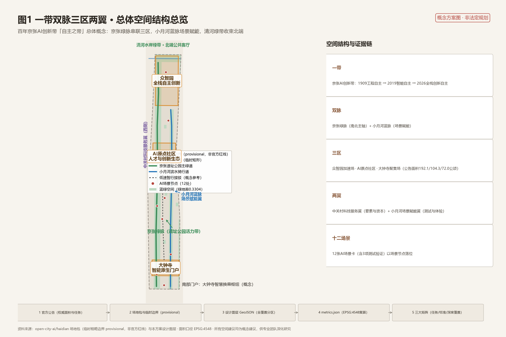
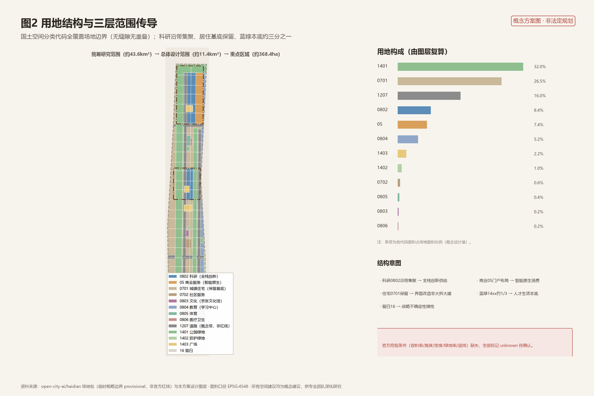
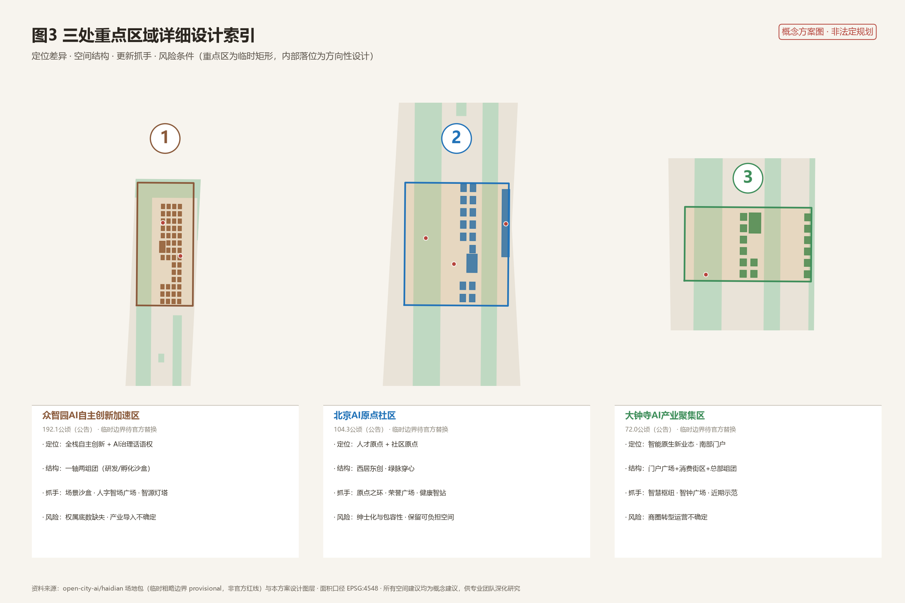
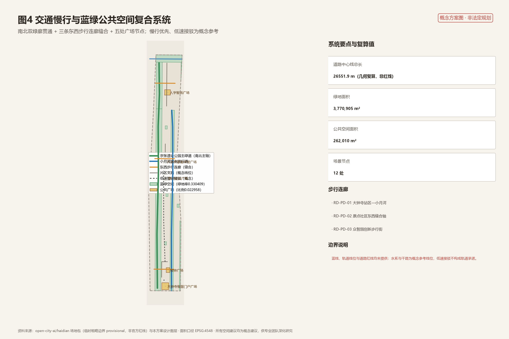
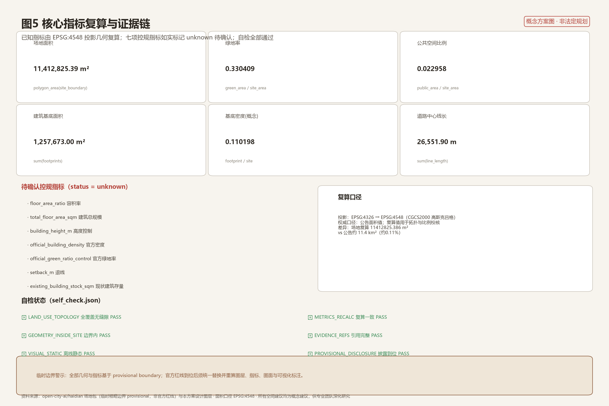

百年同轨·自主之带——百年京张AI创新带城市设计方案
本方案以『自主之带』为总体概念，沿京张遗址公园走廊组织一带双脉三区两翼多节点的空间结构，通过全覆盖用地分区、蓝绿公共空间网络、12项AI场景与12个更新项目，回应百年京张从工程自主到全栈创新自主的世纪叙事；全部指标由设计图层在EPSG:4548复算，控规缺失项如实标记待确认。
百年同轨·自主之带——百年京张AI创新带城市设计方案
> 所有空间落地建议均为**概念建议、参考方案或可供专业团队深化研究**，不替代正式规划，不构成政府审定结论。本方案采用临时粗略边界（provisional boundary），不得作为官方红线、审批依据或精确面积复算依据。[source:OFFICIAL-ANNOUNCEMENT] [standard:PROJECT-AGENT-OPEN-CALL-TASKBOOK]
设计依据与资料清单
本方案的设计依据分为四层。第一层是官方公告与任务书：北京市规划和自然资源委员会海淀分局发布的资格预审公告确定了项目名称、三层范围（统筹研究约43.6平方公里、总体设计约11.4平方公里、重点区域约368.4公顷）、三处重点区与设计任务语境，是方案的主控依据 [source:OFFICIAL-ANNOUNCEMENT]；面向智能体的开源征集任务书摘录补充了十条共创原则、三大定位、五大功能、三区两翼与六项必答任务 [source:AGENT-TASKBOOK]。第二层是场地包与登记表：设计任务书结构化文件、枚举、允许设计空间、范围值与模式文件构成生成约束 [source:SITE-PACKAGE]；公开资料登记表区分 formal 可用、背景参考与 provisional 资料，本方案严格遵循该分级，不把背景或临时资料升级为法定依据 [source:SOURCE-REGISTRY]。第三层是处理资料导航层：仓库事实包提供任务清单、范围结构、资料用途与缺口清单，本方案将其翻译为可读的设计论证，但结论仍回引原始来源 [source:PROCESSED-FACT-PACK]。第四层是专业标准本地快照：城市设计管理办法、控规编制审批办法与国土空间用地分类指南在仓库内均有可校验的本地参考 [standard:MOHURD-URBAN-DESIGN-MEASURES] [standard:MOHURD-CONTROL-DETAILED-PLANNING] [standard:MNR-LAND-USE-CLASSIFICATION-GUIDE]。
资料可用性判断如下：公告文本、任务书摘录与三项专业标准可作为 formal 依据；三区两翼产业背景与海淀产业布局为 A1 级背景资料，仅支撑叙事与定位论证 [source:SRC-2026-BJ-KW-THREE-AREAS-WINGS] [source:SRC-2026-HAIDIAN-1X1]；总体设计范围与三处重点区的临时 polygon 仅用于生成、展示与入口自检 [source:BOUNDARY-SOURCE] [source:KEY-AREA-SOURCE]；全球案例摘要由 AI 基于公开认知整理，仅作机制启发 [source:SRC-AGENT-BACKGROUND-CASES]。上述来源与 sources.json、assumptions.json、compliance_matrix.json、standard_matrix.json、design_depth_matrix.json 一一对应：每一项结论均可从正文引用追溯到 JSON 证据层。建筑专业深度参照项（2016年版编制深度规定）因缺少官方文件，仅登记为待补资料，不作为已满足的权威依据 [standard:MOHURD-ARCH-DESIGN-DEPTH-2016]。

三层范围工作框架
方案按公告确定的三层范围组织工作框架 [source:OFFICIAL-ANNOUNCEMENT]。**统筹研究范围**约43.6平方公里（北至北五环路、东至京藏高速、南至西直门外大街、西至万泉河路），工作目标是产业与未来城市战略研究，成果表达为定位、命名、生态机制与区域协同关系，指标口径采用公告权威值 [metric:coordinated_research_area_sqm]。**总体设计范围**约11.4平方公里，以京张遗址公园周边一至二公里的城市地区和产业区为走廊，工作目标是控规深度的城市更新与城市设计，成果落实为全覆盖用地分区、蓝绿网络、交通慢行与更新项目清单；本方案提交边界采用仓库维护者提供的临时粗略边界，其 EPSG:4548 复算值约1141.28公顷，与公告值差异约0.11% [metric:site_area_sqm] [data:geometry/site_boundary.geojson#SITE-001]。**重点区域范围**约368.4公顷，自北向南为众智园AI自主创新加速区（约192.1公顷）、北京AI原点社区（约104.3公顷）、大钟寺AI产业聚集区（约72.0公顷），工作目标是规划综合实施方案深度的详细设计 [metric:key_area_total_sqm] [metric:key_area_count] [data:geometry/key_areas.geojson#KEY-001]。
三层范围的传导逻辑是：统筹层的生态与品牌战略决定总体层的功能结构与更新优先级，总体层的用地与公共空间框架约束重点层的建筑、场景与项目落位。必须明确披露：当前仓库未取得官方精确红线，三处重点区为临时矩形，公告未给出四至 [source:KEY-AREA-SOURCE]。临时边界的适用范围限于临时生成、可视化与非法定设计讨论；不得用于官方红线、审批、精确面积与法定管控。官方 polygon 到位后，需要重算的对象包括：用地分区面积与比例、绿地与公共空间指标、建筑基底统计、更新项目面积以及全部图面与可视化页面的数值标注 [depth:three_level_scope_framework]。

统筹研究范围产业与未来城市研究
**总体概念与命名（回应 agent.1）**。本方案提出「自主之带」总体概念：同一条走廊承载了三次自主——1909年京张铁路是中国人自主设计建造的第一条干线铁路，2019年京张高铁成为世界首条智能高铁，2026年百年京张AI创新带指向AI全栈自主创新。百年同轨，自主传承，这是方案的主叙事。在此基础上提出一带品牌体系：主名称建议为「京张智带」，英文方向为 Century Jing-Zhang AI Belt；命名体系为「一带·双脉·三区·两翼·十二场景」——一带即京张AI创新带，双脉即京张绿脉与小月河蓝脉，三区即众智园加速场、AI原点社区、大钟寺聚集场，两翼即中关村科技服务翼与小月河场景赋能翼，十二场景即本方案提出的十二张AI场景卡 [source:AGENT-TASKBOOK] [standard:PROJECT-AGENT-OPEN-CALL-TASKBOOK]。Logo 方向为概念草图：以京张铁路青龙桥「人字形」折线为原型，两条线路交汇于一个智能节点，既是对工程自主的致敬，也隐喻「以人为本的AI」；色系建议为京张褐、智能蓝、活力绿。Logo 方向仅为创意提案，未使用任何现有字体、商标或企业标识，正式使用前须进行相似性核查与清权。
**三大定位、五大功能与三区两翼协同回路**。公告确立的三大定位为百年京张文化带、都市AI生活体验带、AI融合创新带；五大功能为AI全栈自主创新体系、世界级AI创新生态、AI+场景赋能新范式、智能化AI活力城市、AI治理全球话语权 [source:OFFICIAL-ANNOUNCEMENT]。空间上，众智园承载全栈自主与AI治理话语，AI原点社区承载创新生态与人才原点，大钟寺承载智能原生新业态，中关村科技服务翼提供资本、知识产权与要素配置，小月河场景赋能翼承载场景测试与公共体验，形成「研发—转化—体验—治理」的回路 [source:SRC-2026-BJ-KW-THREE-AREAS-WINGS]。区域协同上，方案建议与北纬社区、未来科学城、怀柔科学城、经开区及京津冀形成「基础研究—工程验证—场景应用—产业放大」的分工关系，此为研究性判断，供专业团队深化。
**全球AI创新生态案例（回应 agent.2）**。基于公开认知整理8个案例 [source:SRC-AGENT-BACKGROUND-CASES]：旧金山 SoMa 与硅谷展示了风投、高校与开源社区叠加的生态密度；波士顿 Kendall Square 展示了实验室到市场的步行尺度转化；多伦多 MaRS Discovery District 展示了大学锚定的创新走廊治理；伦敦 King's Cross 展示了枢纽更新与院校植入的叠加效应；新加坡 one-north 展示了产学研居融合与监管沙盒；上海张江AI岛展示了场景聚簇与岛式测试；深圳南山展示了全链条与场景城市；杭州城西科创大走廊展示了数字经济走廊的生态组织。可转化机制归纳为五条：场景开放清单制、测试验证沙盒、开源社区线下据点、人才公寓与第三空间配比、公共空间作为创新界面。这些机制分别落位于本方案的场景卡、朝圣地标与运营章节。综合规划创新方面，方案建议以「场景清单+空间供给+运营协议」替代单一地块出让逻辑，作为国土空间规划在AI创新带的一种研究性探索 [depth:overall_spatial_structure] [depth:existing_conditions_diagnosis]。
总体设计范围城市更新与控规深度城市设计
**空间结构**。总体设计范围的空间结构为一带双脉三区两翼多节点 [data:geometry/land_use.geojson#LU-0802-01]：京张遗址公园绿脉纵贯南北，串联三处重点区；小月河蓝脉沿东侧提供场景与生态服务；清河绿带在北端收束形成水岸公共客厅；中关村服务翼与小月河场景翼分别沿西侧与东侧展开。用地分区采用国土空间分类代码子集，全覆盖场地边界、无缝隙无重叠，可由 GeoJSON 直接复算 [standard:MNR-LAND-USE-CLASSIFICATION-GUIDE] [depth:land_use_layout]。
**功能布局与更新框架**。科研用地（0802）集中于众智园与原点社区东侧，承载全栈创新与转化功能；商业服务业用地（05）集中于大钟寺与南部门户，承载智能原生消费与商务；居住用地（0701）保留中部与西部既有社区基底，通过界面改造而非大拆大建实现创新渗透；公园绿地（1401）与防护绿地（1402）构成约三分之一的蓝绿本底 [metric:green_ratio]；广场用地（1403）落位五处公共空间节点 [metric:public_space_ratio]。城市更新总体框架遵循「保留为主、改造为辅、慎拆慎建」：现状建筑组团以保留修缮为主，创新功能优先利用低效空间植入；因现状建筑与权属底数缺失，具体地块的拆改留结论全部列为待确认事项 [depth:retain_renovate_demolish] [standard:MOHURD-CONTROL-DETAILED-PLANNING]。
**开发强度与风貌**。容积率、建筑高度、建筑密度、绿地率控制与退线五项官方控规条件均未包含在公开场地包中，本方案将其全部标记为 unknown 并列明所需来源，不给出任何法定强度数值 [metric:floor_area_ratio] [metric:building_height_m] [metric:official_building_density] [metric:setback_m]。建筑基底作为概念参考值由图层复算，密度约0.11 [metric:building_footprint_area_sqm] [metric:building_density_design]。风貌上提出沿带梯级体量意向：京张走廊两侧保持低伏与文化表达，重点区创新组团适度抬升形成节点，清河界面保持开敞；高度体量风格色彩的具体控制须按城市设计管理办法要求，在控规条件确认后深化 [standard:MOHURD-URBAN-DESIGN-MEASURES] [depth:height_massing_character]。
**市政与新型基础设施**。市政策略提出算力节点、智慧杆件、分布式储能与能源碳智管理的概念布点原则，强调与传统市政设施融合而非另起炉灶；容量测算属专业工程范畴，标记为待确认 [depth:municipal_new_infrastructure]。
重点区域详细设计
**众智园AI自主创新加速区（KEY-001）**。定位为AI全栈自主创新体系与AI治理全球话语权的承载区 [data:geometry/key_areas.geojson#KEY-001]。空间结构为一轴两组团：京张绿脉北段为展示轴，西侧为研发实验室组团，东侧为孵化加速与场景沙盒组团。建筑以 ai_r_and_d、lab、incubator 类型为主，全部为概念新增组团 [data:geometry/buildings.geojson#ZZY-001]。公共空间以人字智场广场为核心，衔接智源灯塔·全栈自主荣誉厅地标。交通上通过东西步行轴连接轨道站点概念接驳点。因重点区为临时矩形，内部落位均为方向性设计；风险在于权属底数缺失与全栈产业导入的不确定性，建议以场景沙盒先行降低试错成本 [metric:key_area_total_sqm]。
**北京AI原点社区（KEY-002）**。定位为世界级AI创新生态的人才原点与社区原点 [data:geometry/key_areas.geojson#KEY-002]。空间结构为西居东创、绿脉穿心：西部保留既有居住组团并植入社区服务与健康智站，东部布局创新转化与终身学习功能，京张绿脉中段设原点论坛广场与开源贡献者荣誉广场。建筑以改造为主（renovate），保留居住基底，植入 incubator、mixed_use 与 education 功能 [data:geometry/buildings.geojson#YD-001]。场景上集聚健康智站、学习舱、共治舱等生活侧AI服务，形成「十分钟AI生活圈」样板。风险在于社区更新中的绅士化与包容性，建议同步保留可负担空间与人工服务通道。
**大钟寺AI产业聚集区（KEY-003）**。定位为智能原生新业态的聚集场与南部门户 [data:geometry/key_areas.geojson#KEY-003]。空间结构为门户广场+消费街区+产业组团：大钟寺智慧门户广场衔接枢纽概念节点，中部为智能原生消费与商务街区，东部为产业总部组团。建筑以 retail、mixed_use、office 改造利用为主 [data:geometry/buildings.geojson#DZS-001]。文化上以大钟寺（永乐大钟所在）为参照提出智钟数字鸣钟馆概念，将「鸣钟」转译为开源发布与场景开放的仪式。风险在于商圈转型的运营不确定性，建议以近期示范项目先行 [depth:three_key_area_detailed_design]。

AI 创新生态、人才画像与 AI+ 场景
**人才与用户画像（不少于5类）**。画像一：AI科研人员，需求为实验空间、算力与学术交流界面；画像二：创业团队创始人，需求为孵化加速、场景试点与融资对接；画像三：开源开发者，需求为线下据点、贡献荣誉与同侪网络；画像四：高校学生，需求为学习舱、实习通道与低成本第三空间；画像五：社区居民（含老年人与儿童家庭），需求为健康、出行与政务服务的人工+智能混合通道；画像六：城市访客与科技爱好者，需求为可体验的朝圣路线与文化导览。画像映射到空间：科研人员对应众智园实验室组团，创业者对应孵化组团，开发者对应原点之环与荣誉体系，学生对应AI终身学习中心，居民对应社区服务设施，访客对应京张绿脉体验路径 [data:geometry/public_space.geojson#SN-08]。
**十二张AI场景卡（其中3张为产业测试验证场景）**。SC-01 自主微循环接驳（测试验证）：大钟寺枢纽至原点社区的低速接驳示范段，服务对象为通勤者与访客，数据边界限定于匿名化客流，需安全员人工监督 [data:geometry/roads.geojson#RD-TR-01]。SC-02 AI自适应信号与慢行优先路口：走廊沿线路口信号配时优化概念，人工复核配时方案。SC-03 智慧慢行导引与无障碍伴行：绿道沿线的语音与视觉无障碍导引，隐私上不做个体追踪。SC-04 低速无人配送示范段（测试验证）：大钟寺街区末端配送试点，限定公开区域与日间时段 [data:geometry/public_space.geojson#SN-10]。SC-05 公园伴侣机器人驿站：绿脉沿线的清洁、巡护与导览机器人补给站。SC-06 社区健康智站：原点社区的健康咨询与转介辅助，明确不替代诊疗并保留人工窗口 [data:geometry/public_space.geojson#SN-06]。SC-07 AI学习舱与终身学习伴学：学习中心的个性化学习空间。SC-08 京张文化AR沉浸导览：遗址公园沿线的历史叙事叠加体验，内容经文化审核。SC-09 场景沙盒开放测试区（测试验证）：众智园为新技术提供受控测试环境，设准入、退出与数据销毁规则 [data:geometry/public_space.geojson#SN-09]。SC-10 能源碳智管理示范楼群：楼群级能耗与碳的可视化调度，数据不出园区。SC-11 城市治理共治舱：公众建议的智能整理与人工复核闭环，禁止自动化处罚。SC-12 开源贡献荣誉交互装置：荣誉广场的贡献者展示与互动。
**场景—空间—运营映射与边界**。每张场景卡均映射空间落位、服务对象、运行数据、隐私边界、人工复核机制、概念运营主体、可视化图层与风险；全部场景节点以 SCENARIO_NODE 图层落位共12处 [metric:scenario_node_count]。隐私与人工复核总原则：数据最小化、匿名化优先、可退出、关键决策必须人工复核；未成熟技术一律以试点方式表达，不写成已批准运营 [standard:PROJECT-AGENT-OPEN-CALL-TASKBOOK]。
用地、建筑规模与拆改留方案
用地布局以全覆盖分区表达，代码采用国土空间分类指南子集，可从图层逐格复算 [data:geometry/land_use.geojson#LU-0701-01] [standard:MNR-LAND-USE-CLASSIFICATION-GUIDE]。结构比例的设计意图是：约三分之一的蓝绿本底支撑人才生活品质，科研与商业用地沿带集聚支撑产业供给，居住与社区服务用地保持既有社会网络，道路用地以概念带状表达（非红线），留白用地为战略不确定性预留弹性。产业功能比例与三区定位对应：众智园以科研与测试为主，原点社区以转化与居住混合为主，大钟寺以商业服务与总部为主。
建筑规模方面，概念建筑基底总面积约125.77万平方米，基底密度约0.11 [metric:building_footprint_area_sqm] [metric:building_density_design]。由于缺少控规条件与现状建筑底数，建筑总规模、容积率与高度控制均标记为待确认 [metric:total_floor_area_sqm] [metric:building_height_m] [depth:development_intensity_controls]。拆改留逻辑：现状建筑组团（existing_retained）原则上保留修缮，创新功能通过低效空间置换植入；新增概念组团（new_build）仅出现在众智园创新集群与四处文化地标；改造组团（renovate）覆盖大钟寺街区与原点社区界面。所有拆改留表述均为概念参考，地块级结论须经现状调查、权属确认与法定程序后由专业团队作出 [depth:retain_renovate_demolish] [data:geometry/buildings.geojson#LB-01]。空间供给与运营策略建议采用「空间清单+场景准入+动态评估」机制，避免一次性供给固化。
交通、轨道、市政与公共服务设施
交通策略围绕「缝合东西、贯通南北、慢行优先」展开 [depth:traffic_rail_slow_parking]。南北主轴为京张遗址公园主绿道，自南部门户至清河全长概念贯通；东侧小月河滨水骑行道与之平行，形成双绿廊 [data:geometry/roads.geojson#RD-GW-01] [data:geometry/roads.geojson#RD-CW-01]。东西向设三条步行连廊，分别联系大钟寺站区、原点社区与众智园，缝合铁路走廊造成的历史分隔 [data:geometry/roads.geojson#RD-PD-02]。片区支路微循环以概念线位表达，道路中心线总长约26551.9米为几何复算值，非红线长度 [metric:road_centerline_length_m]。轨道接驳方面，方案提出大钟寺智慧换乘枢纽概念与枢纽至原点社区的低速智行接驳参考线位，明确其为场景接驳概念而非轨道线位承诺 [data:geometry/roads.geojson#RD-TR-01]。停车与非机动车组织建议以枢纽集中停放加绿道沿线小型驿站的方式减少地面占道；活动日交通组织纳入场景卡 SC-01 的测试内容。
市政与公共服务设施方面，创新服务平台包括场景沙盒、开源据点与企业服务驿站（概念）；人才生活服务包括健康智站、学习舱、社区服务中心与人才公寓建议选址方向；新型基础设施包括算力节点、智慧杆件与分布式储能的概念布点原则。所有线位、管线与容量均不构成工程方案，须专业团队依据官方资料深化 [data:geometry/constraints.geojson#CN-02]。

蓝绿空间、公共空间与城市风貌
蓝绿系统由一带三廊多点构成：京张遗址公园活力带（南、中、北三段）、小月河蓝绿场景走廊、清河水岸绿带、东侧防护绿带与四处口袋公园，共同构成连续的生态休闲网络 [data:geometry/green_space.geojson#GS-01]。绿地总面积约377.09万平方米，绿地率复算值约0.3304，作为概念设计参考值，法定绿地率控制待控规确认 [metric:green_space_area_sqm] [metric:green_ratio] [metric:official_green_ratio_control]。公共空间系统以五处广场为骨架：大钟寺智慧门户广场、原点论坛广场、人字智场广场、开源贡献者荣誉广场与智钟广场，总面积约26.20万平方米，比例约0.023 [metric:public_space_area_sqm] [metric:public_space_ratio]。
**AI朝圣地标与荣誉展示体系（回应 agent.4，不少于3处）**。地标一「人字智桥·京张遗产展廊」：以青龙桥人字形线路为原型的概念展廊，致敬工程自主，位于绿脉南段 [data:geometry/buildings.geojson#LB-04]。地标二「原点之环·开源贡献展馆」：以代码循环与铁路转盘为意象的贡献者展馆，位于原点社区荣誉广场 [data:geometry/buildings.geojson#LB-02]。地标三「智源灯塔·全栈自主荣誉厅」：以灯塔意象承载算力、芯片、框架等全栈自主成就展示，位于众智园 [data:geometry/buildings.geojson#LB-01]。地标四「智钟数字鸣钟馆」：呼应大钟寺永乐大钟，将重大开源发布与场景开放转译为「鸣钟」仪式 [data:geometry/buildings.geojson#LB-03]。四处地标均为概念方案，不构成建设承诺，不使用任何未清权的形象元素。荣誉展示体系包括贡献者墙、开源里程碑步道与命名规则建议；公共空间组件库包括智慧灯杆、交互亭、导视模块与休憩模块四类原型。城市风貌上，京张走廊保持文化低伏界面，重点区以现代简洁体量为主，第五立面建议绿化与光伏结合，整体基调为「灰褐为底、蓝绿为脉、节点点彩」[depth:blue_green_public_space] [standard:MOHURD-URBAN-DESIGN-MEASURES]。
更新项目清单、实施政策与分期计划
更新项目清单共12项，以 PHASE 图层逐项落位 [metric:renewal_project_count] [data:geometry/phasing.geojson#PH-01]。近期（概念时序 2026—2028）四项：U1 大钟寺站智慧门户广场改造、U2 大钟寺智能原生消费街区活化、U3 京张遗址公园南段示范段、U4 小月河蓝绿走廊南段。中期（概念时序 2028—2031）四项：U5 北京AI原点社区创新界面改造、U6 原点论坛与开源贡献者广场、U7 中部既有住区慢行微循环改造、U8 小月河中段场景走廊。远期（概念时序 2031—2035）四项：U9 众智园全栈创新集群建设、U10 清河水岸AI治理论坛会址与公园、U11 京张遗址公园北段与人字智桥地标、U12 小月河北段与东部留白战略衔接。分期逻辑为门户先行、社区居中、集群殿后，以可见的近期成效支撑长期投入；时序与主体均为概念建议，投资与政策安排不构成承诺 [depth:phasing_implementation]。政策建议包括场景开放清单制、低效空间置换激励与更新基金研究方向，供专业团队与主管部门参考。
**全球AI创新活动体系与长期运营（回应 agent.6）**。年度活动体系建议为「一会一节一日一赛」：京张AI大会（年度旗舰会议）、原点开源节（开发者嘉年华）、场景开放日（政企对接）、京张智带马拉松黑客松。活动品牌与一带品牌共用视觉系统，独立运营命名。开发者社区运营机制：线上开源仓库加贡献分级，线下以原点之环为据点组织聚会与路演。场景开放运营机制：需求征集—沙盒测试—试点运行—评估推广四阶段，与 SC-09 场景沙盒联动。公共体验路线：大钟寺智钟广场—京张绿脉—原点之环—人字智桥—智源灯塔的朝圣动线。国际传播与招引转化机制：双语叙事、案例出版与国际伙伴城市交流为概念方向；所有活动、招商与资金安排均表述为开放共创建议 [depth:renewal_project_list]。
指标体系、面积复算与合规矩阵
核心指标全部由设计图层在 EPSG:4548 投影下复算，公式、来源文件与置信度登记于 metrics.json [depth:metrics_recalculation]。场地面积复算值 11412825.386 平方米，与公告约11.4平方公里的差异约0.11%，公告值为权威口径 [metric:site_area_sqm]。绿地率 0.330409 与公共空间比例 0.022958 为概念设计值：前者支撑人才生活品质的叙事，后者支撑创新交往节点的分布密度 [metric:green_ratio] [metric:public_space_ratio]。建筑基底面积与密度（约125.77万平方米、0.110198）回应产业空间供给的概念强度，但不构成法定开发强度 [metric:building_footprint_area_sqm] [metric:building_density_design]。重点区总面积 3684000 平方米采用公告值，三处重点区数量与面积逐一登记 [metric:key_area_count] [metric:key_area_total_sqm]。统筹研究范围面积 43600000 平方米为公告值 [metric:coordinated_research_area_sqm]。道路中心线长度、场景节点与更新项目数量分别支撑交通、场景与实施章节 [metric:road_centerline_length_m] [metric:scenario_node_count] [metric:renewal_project_count]。待确认指标包括容积率、建筑总规模、高度、官方密度、官方绿地率控制、退线与现状建筑存量，共七项，全部标记 unknown 并说明所需资料来源 [metric:existing_building_stock_sqm]。
合规矩阵覆盖公告 1.3/1.4/1.5 全部条目与 agent.1—agent.6 六项任务，共23条，每条均列明章节、图层、指标、图纸、可视化页面、来源、假设与自检项；标准矩阵覆盖五项强制标准并逐一 addressed，建筑深度参照项如实登记为 data_gap；设计深度矩阵15项全部 complete。三份矩阵与正文引用一一对应，可在 compliance_matrix.json、standard_matrix.json、design_depth_matrix.json 中机读校验 [standard:PROJECT-OFFICIAL-ANNOUNCEMENT]。

风险、版权与合规说明
资料合法性与版权：本方案仅使用仓库登记的公开与清权资料，未使用秘密地图、非公开表格、商业地图底图或未经授权的形象素材；AI 生成内容的生成方式、责任边界与限制在 assumptions.json（A-MODEL-001）与 report/copyright_statement.md 中披露 [depth:risk_missing_data]。官方批准与实施承诺禁用：全文无任何已获批准、保证落地或确定性承诺表述；活动、招商、资金与政策均为概念建议。隐私保护：场景卡逐张定义数据最小化与人工复核边界，不使用个人隐私作为必要输入。主要风险与缓解措施见 risk.json：政策不确定性（控规缺失）与实施复杂度（多主体权属）为高分项，已列明人类复核安排。待补资料清单：官方精确红线、三处重点区 polygon、控规条件、现状建筑与权属底数、文保蓝线与市政容量；上述资料到位后须重算图层、指标、图面与可视化标注。本方案为开放共创建议，最终判断由人类和专业团队完成。
参考资料
brief/site-package/design_brief.json（场地包主控文件）[source:SITE-PACKAGE]brief/site-package/agent_taskbook.json（智能体任务书摘录）[source:AGENT-TASKBOOK]brief/site-package/geometry/provisional_boundaries.geojson（临时粗略边界）[source:BOUNDARY-SOURCE] [source:KEY-AREA-SOURCE]data/source_registry.json（公开资料登记表）[source:SOURCE-REGISTRY]data/processed/agent_fact_pack.md（处理资料导航层）[source:PROCESSED-FACT-PACK]- 资格预审公告（北京市规划和自然资源委员会海淀分局，2026-05-09）[source:OFFICIAL-ANNOUNCEMENT]
- 三区两翼打造世界级AI集聚地（北京市科委、中关村管委会，2026-04-03）[source:SRC-2026-BJ-KW-THREE-AREAS-WINGS]
- 海淀区“1+X+1”现代化产业体系建设布局（海淀区政府，2026-03-02）[source:SRC-2026-HAIDIAN-1X1]
- 城市设计管理办法（住房和城乡建设部，2017）[source:SRC-2017-MOHURD-URBAN-DESIGN-MEASURES]
- 城市、镇控制性详细规划编制审批办法（住房和城乡建设部）[source:SRC-MOHURD-CONTROL-DETAILED-PLANNING]
- 国土空间调查、规划、用途管制用地用海分类指南（自然资源部，2023）[source:SRC-2023-MNR-LAND-USE-CLASSIFICATION]
- 全球AI创新生态案例摘要（AI 基于公开认知整理，背景参考）[source:SRC-AGENT-BACKGROUND-CASES]
brief/site-package/schemas/*.schema.json（证据文件模式）[source:SITE-PACKAGE]